มาฝึกหูกันดีกว่า EP 2
อ่าน EP 1 - ความเข้าใจเรื่องเสียงเบื้องต้น https://www.facebook.com/groups/791461357947350/permalink/1932596877167120/
ตอนนี้จะเป็นภาคปฏิบัติล้วน ๆ แต่ก่อนจะเริ่มผมอยากให้ทุกคนลองฟังคลิปนี้ก่อน สำหรับใครไม่เก่งภาษาอังกฤษ ให้ฟังไปก่อนเดี๋ยวผมจะมาแปรให้ในรูปถัด ๆ ไป https://www.youtube.com/watch?v=0fckQLQWhe0
จากนั้นเปิดโปรแกรมในคลิปนี้ https://webtet.net/apcl/#/parametric
- ความถี่สำคัญ
จากคลิปจะเห็นว่าเขาแบ่งความถี่เป็น 63, 125, 250, …
ซึ่งความถี่นี้เป็นการแบ่งแบบ ANSI S1.11-2004 แบบเต็ม Octave ซึ่งประกอบด้วย 31.5, 63, 125, 250, 500, 1k, 2k, 4k, 8k, 16k
ใครสนใจอ่านเพิ่มเติมได้ที่ ANSI S1.11: Specification for Octave, Half-Octave, and Third Octave Band Filter Sets https://archive.org/details/gov.law.ansi.s1.11.2004/page/n23/mode/2up
ส่วนบางคนอาจจะเคยเห็น EQ แบ่งเป็นย่าน 16, 32, 65, 130, 261, 523, 1k, 2k, 4.1k, 8.3k, 16.7k ซึ่งการแบ่งแบบนี้จะเรียกว่า Equal temperament (A-440 Hz)
อ่านเพิ่มที่ http://hyperphysics.phy-astr.gsu.edu/hbase/Music/et.html
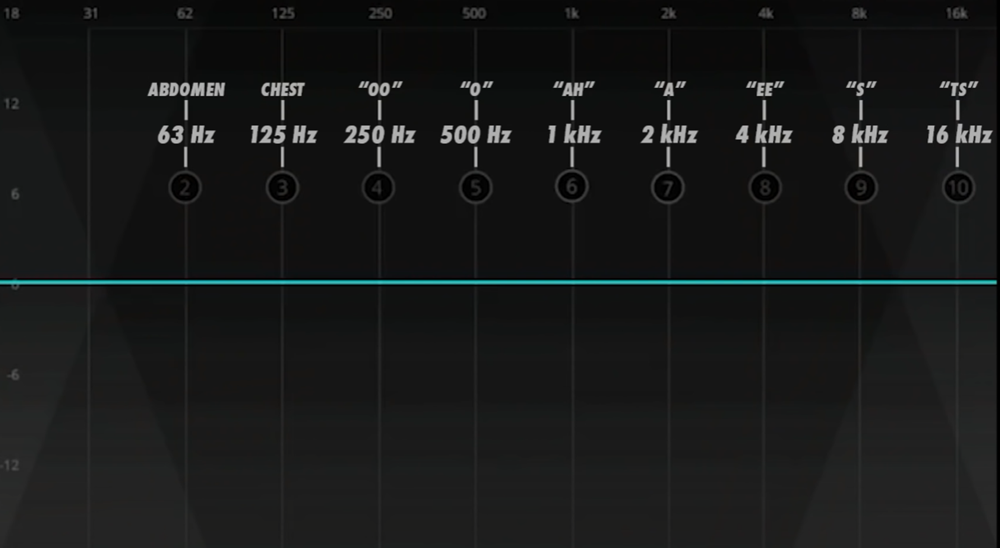
- วิธีใช้โปรแกรม เว็ป webtet.net/apcl/#/parametric เป็นสื่อการสอนที่มาพร้อมกับหนังสือ “Audio Production and Critical Listening Technical Ear Training” เขียนโดย Jason Corey
เมื่อกด link ก็จะเห็นหน้าจอตามภาพ
หน้าจอนี้เป็นโปรแกรมแบบฝึกหัดสำหรับฝึกหูจับเสียงย่านความถี่
โดยโปรแกรมจะให้แบบฝึกหัดสุ่มปรับค่าความถี่ให้เราฟัง จากนั้นให้เราตอบว่าความถี่ที่เปลี่ยนไปคือความถี่อะไร ความดังเท่าไหร่ ถ้าตอบถูกคุณก็จะได้คะแนนในข้อนั้นไป
รูปนี้จะขออธิบายส่วนประกอบของโปรแกรมก่อน
1 ชนิดโจทย์
Matching - ปรับ EQ ตามให้ตรงกับเสียงโจทย์ Matching memory - ปรับ EQ ตามให้ตรงกับเสียงโจทย์ โดยฟังโจทย์ได้รอบเดียว Return to Flat - ปรับ EQ จากเสียงโจทย์ให้ flat Absolute ID - ให้เราทาย EQ โดยไม่ให้เราลองปรับ Return to Flat Memory - น่าจะไว้ปรับ EQ จากเสียงโจทย์ให้ flat โดยให้ฟังโจทย์รอบเดียวเหมือนกัน แต่ผมใช้แล้วยังงงๆ ไม่เห็นต่างจาก Return to Flat แบบธรรมดาเลย ถ้าใครเจอข้อแต่ต่างแล้วมาแชร์กันหน่อย
2 ความละเอียดความถี่ มี 1 Octave (แนะนำ) และ 1/3 Octave (ระดับยาก)
3 จำนวน แบนด์ ที่โดนปรับ เลือกได้ตั้งแต่ 1 - 3
4 ระดับ gain ของโจทย์ ง่ายสุดจะมีแค่ +12dB พอยากขึ้นก็จะมี +- และระดับความดังที่ปรับได้ละเอียดขึ้น
5 Q หรือความกว้างของความถี่ Q มาก = แคบ Q น้อย = กว้าง
6 เลือกช่วงความถี่ที่จะฝึก
7 เลือกเสียงที่ใช้
Pink Noise เล่น pink noise Sound File เล่นไฟล์ที่อัพโหลดขึ้นไป หรือ *** กดเพิ่อปิด pink noise *** Mono ปรับให้เสียงที่ออกเป็น mono
8 ปรับระดับความดัง
9 คำตอบของเรา
มี 3 แกนคือ FREQ คือย่านความถี่ GAIN คือระดับความดัง เพิ่ม/ลด เท่าไหร่ Q ค่านี้โปรแกรมจะปรับให้อัตโนมัติ แต่จะลองปรับเพื่อฟังดูเองก็ได้
A ไว้ฟังเสียง เดิม - โจทย์ - คำตอบ ในวงเล็บคือคีย์ลัด
Bypass (w) คือเสียง pink noise หรือไฟล์ดังเดิม Question (e) คือ โจทย์ Your Response (r) คือ เสียงจากคำตอบของเราที่ปรับในข้อ 9
B คือตั้งเวลานับถอยหลังสำหรับทำโจทย์แต่ละข้อ มีให้เลือกตั้งแต่ 0 - 30s หรือ ไม่จำกัด ถ้าเวลาหมดจะถือว่าเราตอยผิดในข้อนั้นไป
C คะแนน และ ปุ่มรีเซต
D กดเพื่อส่งคำตอบ หรือ กดปุ่ม enter ก็ได้เช่นกัน
F คำตอบในข้อนั้น ๆ ถ้าขึ้น สีเขียวคือตอบถูก สีแดงคือตอบผิด
G เราสามารถใช้ไฟล์เพลงของเราเองได้ โดยคลิกที่สีเหลี่ยมเพื่อเลือกไฟล์ หรือ ลากไฟล์มาวางก็ได้ โดยไฟล์ไม่จำเป็นต้องเป็น .wav จะใช้ .mp3 .flac .m4a หรือไฟล์เสียงอื่น ๆ ก็ได้
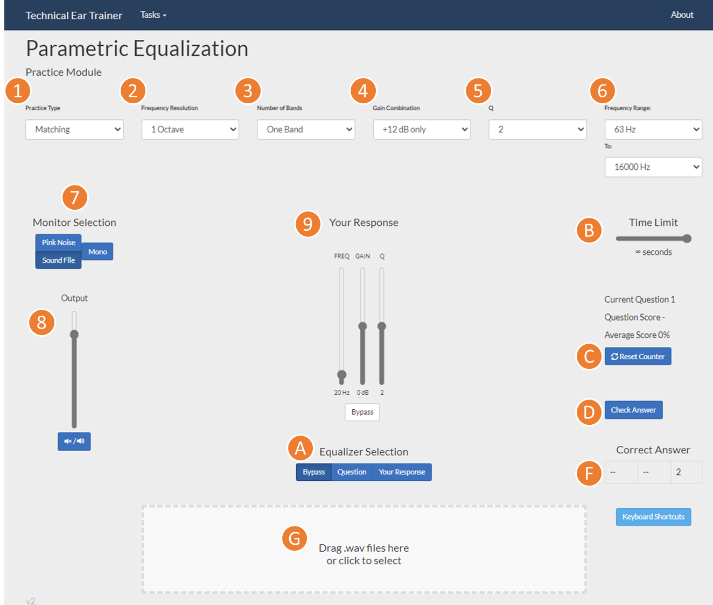
- เตรียมโปรแกรมสำหรับฝึกหู
สำหรับผู้เริ่มต้น ผมขอให้อย่าเพิ่งเล่นตัวแบบฝึกหัด เดี๋ยวมาฝึกแยกเสียงความถี่กันก่อน
1 ให้กดไปที่ pink noise ซึ่งเมื่อกดแล้วจะต้องเสียง noise ออกมา จากนั้นปรับ Output ให้อยู่ในระดับที่ฟังสบาย ๆ ไม่เบาไป ไม่ดังไป
2 กดไปที่ ปุ่ม Your Response
3 ลองเลื่อน FREQ ดูแล้วลองฟังว่าเสียง เสียงจะต้องเปลี่ยนไปตามที่เราปรับ ถ้าเสียงสูงมาก
ส่วนต่อไปผมจะมาแปลคลิปในตอนแรกอีกที ใครฟังเป็นอยู่แล้วหรือฟังคลิปของ Audio University เข้าใจก็ข้ามส่วนนี้ไปได้เลยครับ
ส่วนใครจะลองวิธีตามผมก็ดูหน้าถัดไปเลย
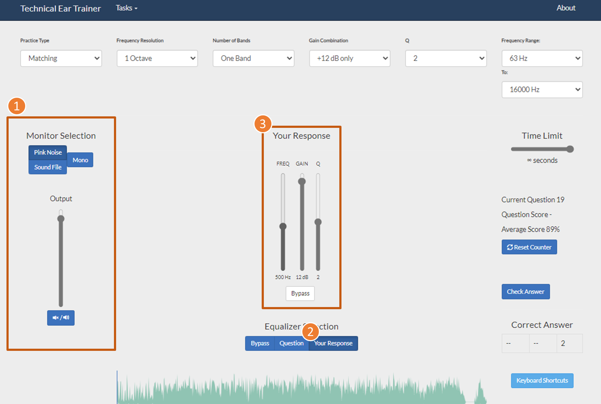
- 250Hz เสียง อู
อันดับแรกให้คุณปรับ FREQ ไปที่ 250Hz ก่อน
จากนั้นทำปากออกเสียง “อู”
จากนั้นหายใจให้เต็มปอด แล้วลองออกเสียง โดยไม่ต้องมีเสียงจริงออกมา ให้ออกมาแต่ลม (เหมือนเวลากระซิบข้างหูคนอื่น แต่อันนี้ใช้ลมเยอะ ๆ หน่อย อารมณ์เล่นเครื่องดนตรีพวกเครื่องเป่า)
ลองปรับความถี่ให้ตรง และใช้ วิธีปรับสลับ bypass และ your response ไปมา (คีย์ลัด w กับ r)
ใครที่ยังจับเสียงไม่ได้ หรือยังไม่รู้สึกสั่น ๆ ให้เพิ่มเสียงขึ้น หรือ เข้าไปลองใกล้ ๆ ลำโพง จะจับเสียงได้ง่ายขึ้น
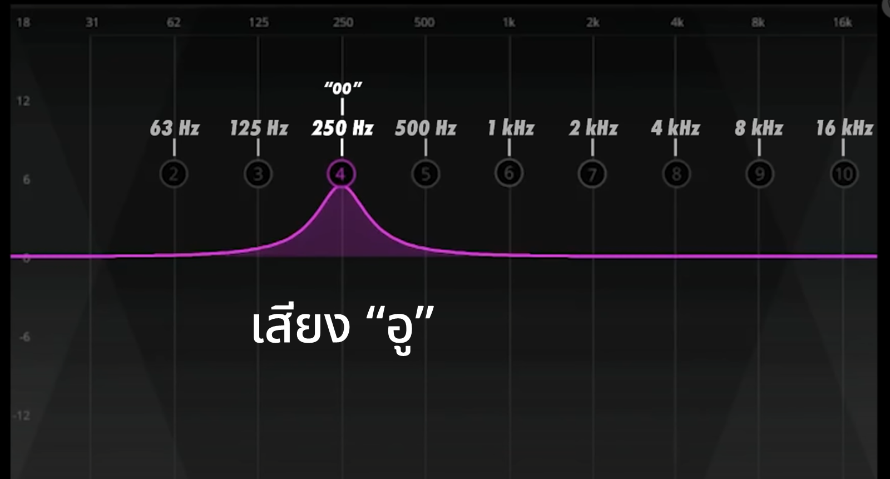
- 500Hz เสียง โอ
ปรับ FREQ ไปที่ 500Hz
ทำปากออกเสียง “โอ”
ยกเพดานปากด้านในขึ้นสูง ๆ (เปิดช่องคอ)
แล้วออกเสียงโอ โดยไม่ออกเสียง แล้วให้ลมออกเยอะ ๆ
เหมือนเดิม ลองปรับความถี่ให้ตรง สลับ bypass และ your response ไปมา (คีย์ลัด w กับ r) ทำให้ใน ปาก/คอ รู้สึกสั่น ๆ ให้ได้
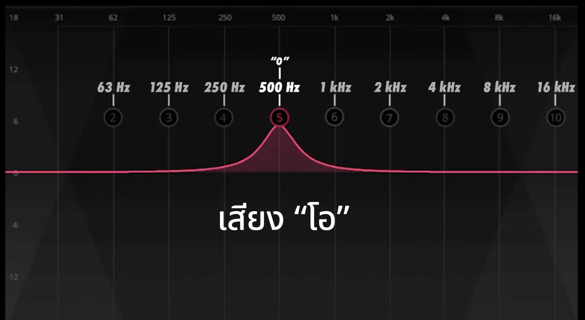
- 1000Hz เสียง อา
ปรับ FREQ ไปที่ 1000Hz
ทำปากออกเสียง “อา”
เปิดช่องคอ
ออกเสียงอา ไม่ออกเสียง แล้วให้ลมออกเยอะ ๆ
ปรับความถี่ให้ตรง สลับ bypass และ your response ไปมา
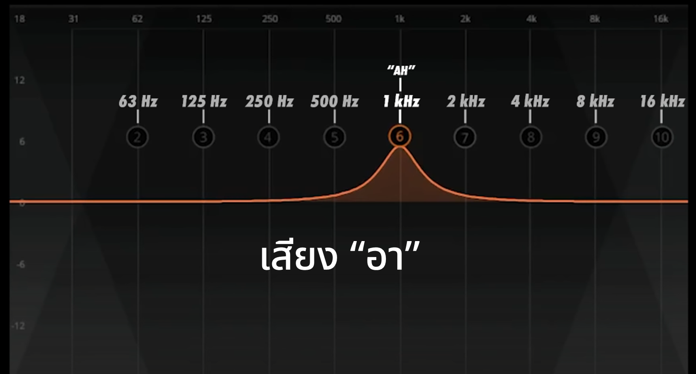
- 2000Hz เสียง เฮ
สังเกตว่าผมใช้ “ฮ” แทน “อ” เพราะคนไทยเวลาออกเสียง “เอ” ช่องคอมันจะปิด แต่ถ้าออกเสียงเป็น “เฮ” คอจะเปิดออก
เอาหละปรับ FREQ ไปที่ 2000Hz
ทำปากออกเสียง “เฮ”
ออกเสียงแบบไม่ออกเสียง แล้วให้ลมออกเยอะ ๆ
ปรับความถี่ให้ตรง สลับ bypass และ your response ไปมา
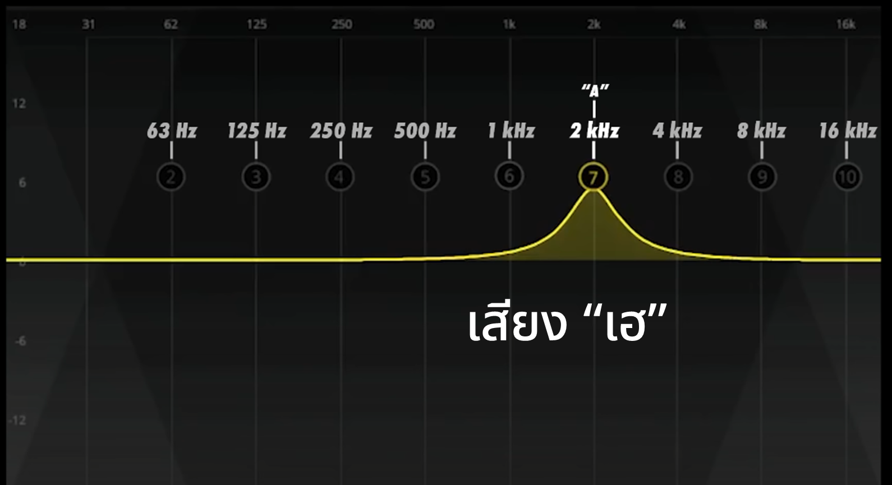
- 4000Hz เสียง อี
ความถี่นี้จะเริ่มมีความแตกต่างละ เพราะไม่ต้องเปิดช่องคอ เนื่องจากความถี่เริ่มมีความยาวคลื่นลดลงเหลือแค่ประมาณ 8 ซม. เท่านั้น
ปรับ FREQ ไปที่ 4000Hz
ทำปากออกเสียง “อี”
ออกเสียงแบบไม่ออกเสียง ใช้ลมเยอะ ๆ
ปรับความถี่ให้ตรง สลับ bypass และ your response ไปมา
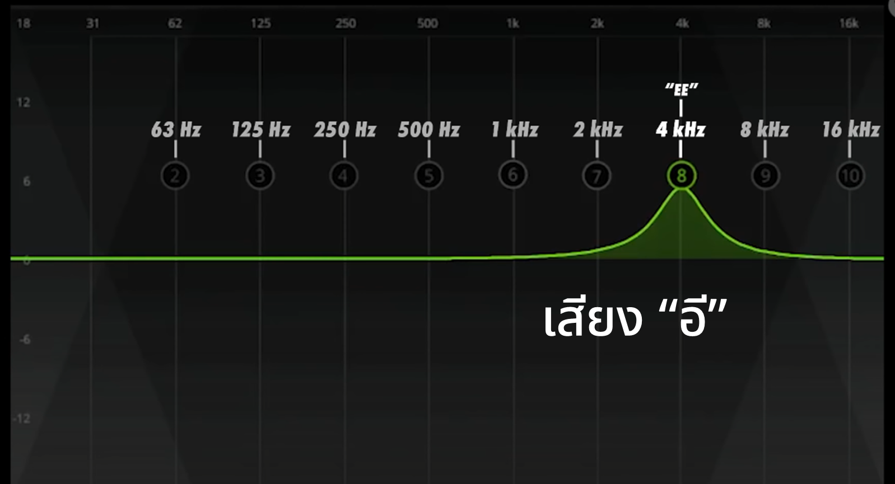
- 8000Hz เสียง เอสสสสสสส
จากนี้จะเริ่มเสียงที่ไม่สามารถได้เทียบกับสละได้แล้ว
8000 Hz จะตรงกับเสียงลงท้ายด้วย “s” ในภาษาอังกฤษ หรือ เริ่มต้นเสียง “ส” ในภาษาไทย
ส่วนตัวชอบแบบภาษาอังกฤษมากกว่าเพราะลาก s ยาว ๆ ถ้า ส ในภาษาไทยมันจะเป็นช่วงสั้นไปหน่อย
เวลาทำเสียงให้เอาลิ้นไปดุนไว้ที่เพดานปากหลังฟัน แล้วออกเสียง(ลม)ผ่าน ลิ้นและเพดานปาก
เอาหละปรับ FREQ ไปที่ 8000Hz
ลองออกเสียง “เอสสสสสสสสสสสสสส” แล้วเทียบดูครับ
ปรับความถี่ให้ตรง สลับ bypass และ your response ไปมา
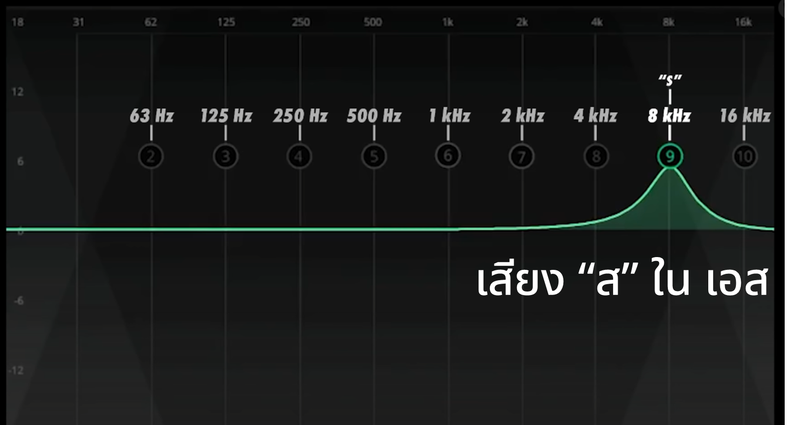
- 16000Hz เสียง ทิซส์
เสียงนี้พูดตามตรง ผมไม่รู้ว่าจะสะกดอย่างไร ใครมีไอเดียแชร์ในคิมเมนต์ได้
ถ้าจะออกเสียงนี้ ก็ให้นึกถึงเสียงกลองชุด ซึ่งก็จะตรงกับ closed hi-hat หรือ ฉาบไฮแฮต แหลม ๆ สั้น ๆ
รูปปากคล้ายๆ เสียง เอส แต่ให้สั้นและเร็ว และระวังน้ำลายกระเด็น : P
ปรับ FREQ ไปที่ 16000Hz
ลองทำเสียง ฉาบไฮแฮต ดูซิตรงไหม (ส่วนตัวรู้สึกยากพอสมควร)
อย่าลืม สลับ bypass และ your response ไปมา
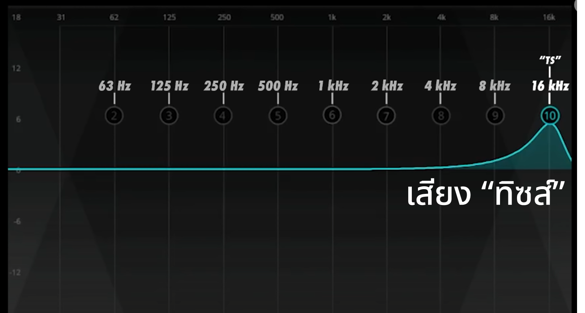
- 63 Hz ความรู้สึกส่วนท้อง
ช่วงความถี่ต่ำ จะเป็นช่วงที่มีความสั่นพ้องกับร่างกาย
ถ้าอ้างอิงจากในคลิป เขาบอกว่า 63Hz จะสั่นพ้องกับช่วงท้อง
แต่สรีระร่างกายคนเราไม่เหมือนกัน ก็อาจจะไม่สั่นกับจุดอื่นได้ อย่างผมเอง ผมจะรู้สึกสั่น ๆ ที่กามถึงใต้ใบหู
แต่ก็อาจจะเป็นเพราะผมใช้ลำโพงคอมพิวเตอร์ตั้งโต๊ะก็ได้ถึงรู้สึกแบบนี้ ใครที่มีลำโพงขนาดใหญ่ก็จะรู้สึกได้ง่ายกว่า
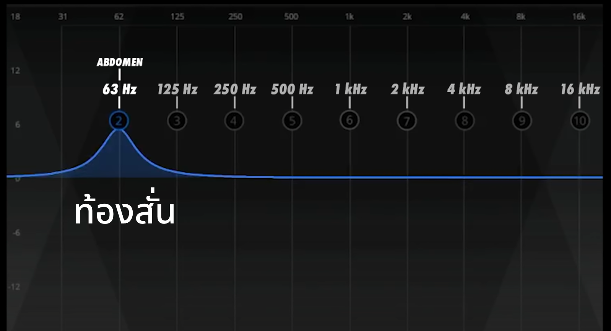
- 125 Hz ความรู้สึกช่วงอก
อ้างอิงจากในคลิป เขาบอกว่า 125Hz จะสั่นพ้องกับช่วงหน้าอก
ส่วนผมจะรู้สึกช่วงโพรงจมูก ก็ใครรู้สึกส่วนไหนก็ลองมาแชร์กันครับ
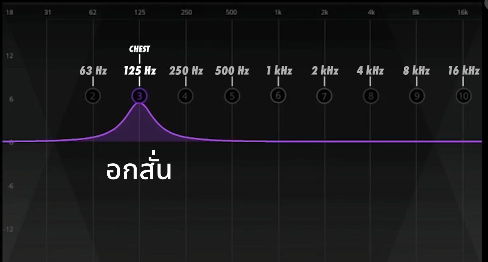
- วิธีทำแบบฝึกหัด
1 กด pink noise จะมีเสียง pink noise ออกมา 2 กดที่ Question (e) เสียงของโจทย์จะถูกเล่นออกมา 3 กดที่ Your Response (r) แล้ว 4 เลือกคำตอบ
แนะนำให้กดปุ่ม 2 และ 3 สลับกับเพื่อเทียบเสียง
5 เมื่อมั่นใจแล้วกด Check Answer (enter) 6 เช็คคำตอบ ถ้าถูกจะขึ้นสีเขียว ผิดขึ้นสีแดง 7 กดปุ่ม Next Question (enter) เพื่อทำข้อต่อไป
- วงเล็บคือปุ่มบนคีย์บอร์ด
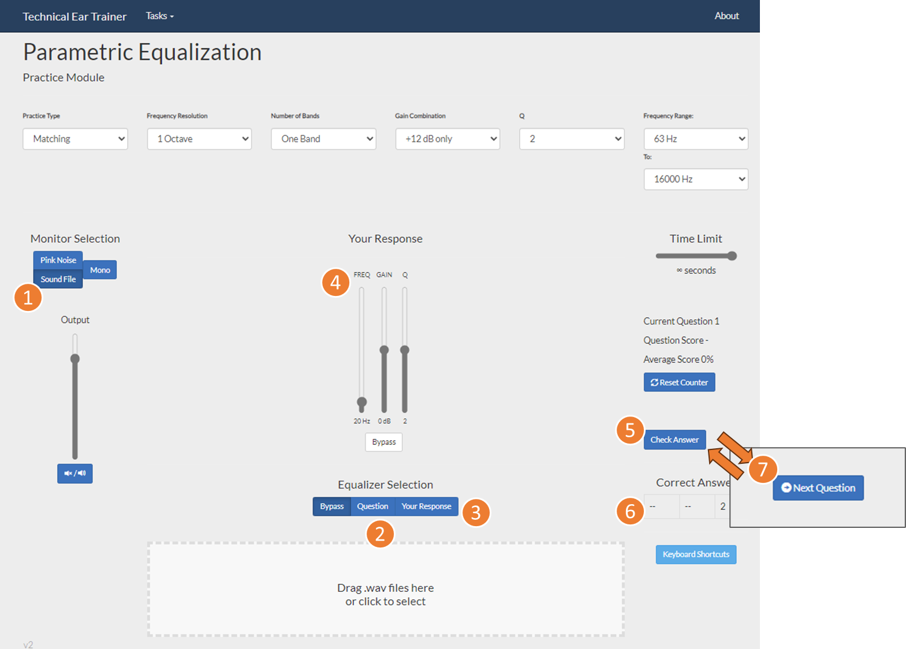
- เพิ่มความยาก
ถ้าต้องการเพิ่มความยาก ให้ลองเปลี่ยน Gain Combination ดูเพื่อทดสอบกับความดังระดับต่าง ๆ
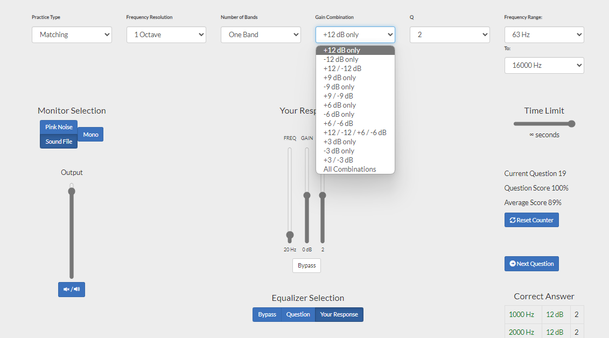
- หลายแบรนด์
หรือเพิ่มจำนวนแบรนด์ที่ถูก EQ โดยเลือก Number of bands
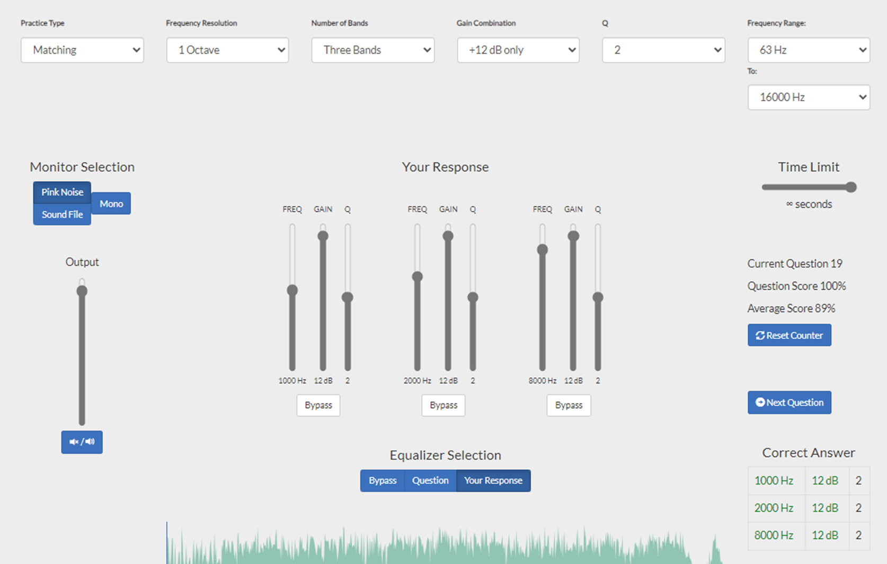
- ใช้ไฟล์เพลง
1 คลิกที่สีเหลี่ยมเพื่อเลือกไฟล์ หรือ ลากไฟล์มาวาง 2 กดปุ่มเล่นเพลง จากนั้นก็ทำแบบฝึกหัด ได้เหมือนเดิม
เพลงที่ใช้ผมแนะนำให้ใช้เพลงที่เปิดเทสลำโพงที่ฟังเป็นประจำ
หรือใครอยากลองเสียงกลองดาวโหลดได้จากลิงค์นี้ https://drive.google.com/file/d/1GJN6FyjhrZYtdCY5n3OJNe_5NF5Be-h7/view?usp=sharing
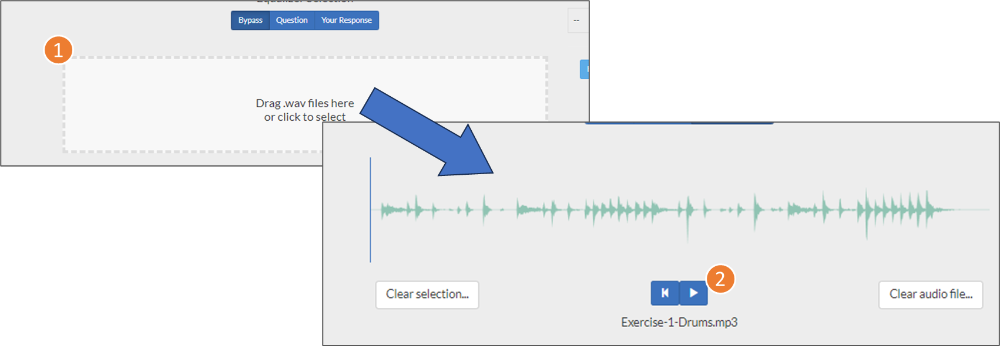
- สรุป เป็นอย่างไรกันบ้างครับกับการฝึกฟังเสียง ขอแค่ใช้เวลาฝึกซักวันละ 5 - 10 นาที ผมรับประกันเลยว่าหูคุณจะดีขึ้น 100%
ใครลองเล่นแล้วผลการทดสอบเป็นอย่างไรก็ลองเอามาอวดกันครับ : D
แต่สิ่งหนึ่งที่ต้องบอกไว้ก่อนคือวิธีนี้ยังขาดไปอีกอย่างหนึ่ง วิธีนี้จะใช้ให้คุณเปรียบเทียบเสียงได้เฉพาะเสียงในระบบของคุณเท่านั้น ไม่ได้เป็นค่ามาตรฐาน เช่น ถ้าระบบของคุณเสียงแหลมเยอะ คุณก็จะรู้แค่ว่าเสียงลำโพงอื่นที่คุณได้ยินนั้น มากกว่าหรือน้อยกว่าระบบของคุณ กล่าวคือคุณอาจจะฟังว่าลำโพงของคนอื่นมีเสียงแหลมน้อยทั้งที่ระบบของเขาเป็น flat studio monitor ที่มีการสนองที่เรียบทุกความถี่แล้ว เพราะว่าหูของคุณเคยชินกับเสียงแหลมเยอะ ๆ แล้วนั่นเอง
ในตอนต่อไปผมจะมาบอกวิธีที่จะหาเครื่องเสียงมาตรฐาน ในราคาย่อมเยาให้ฟังกัน
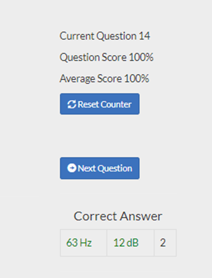